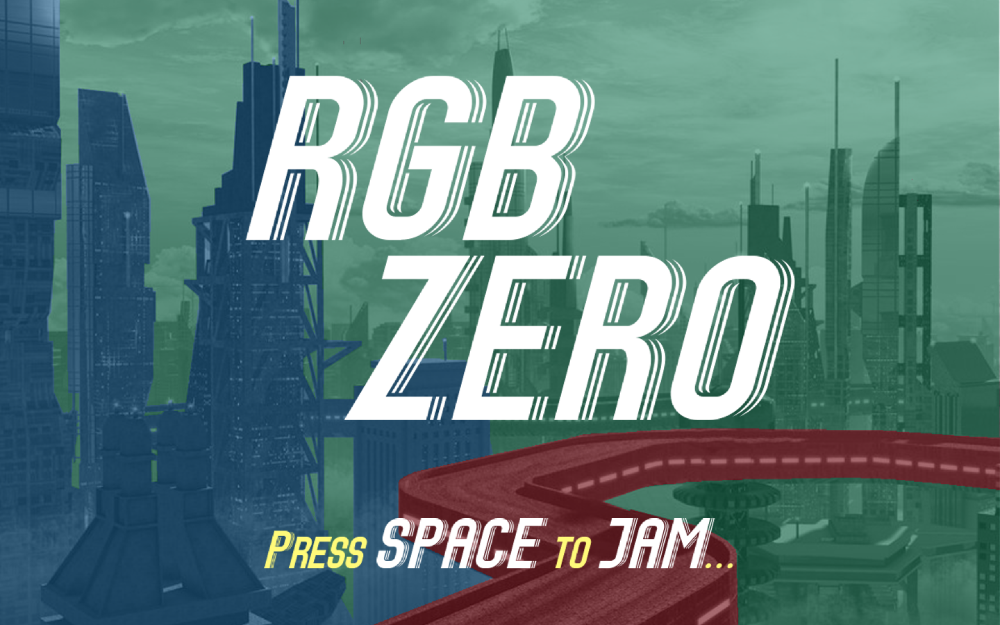
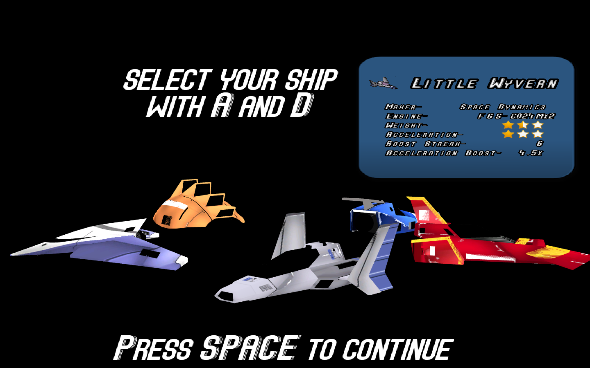
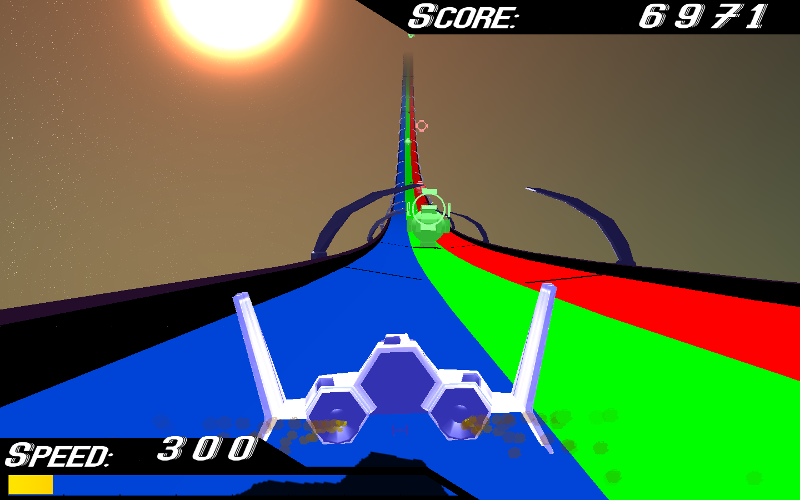
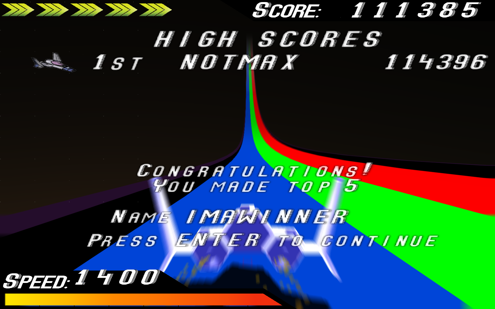
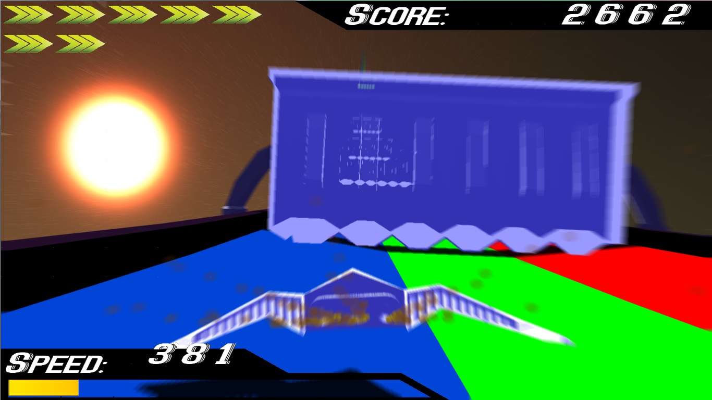
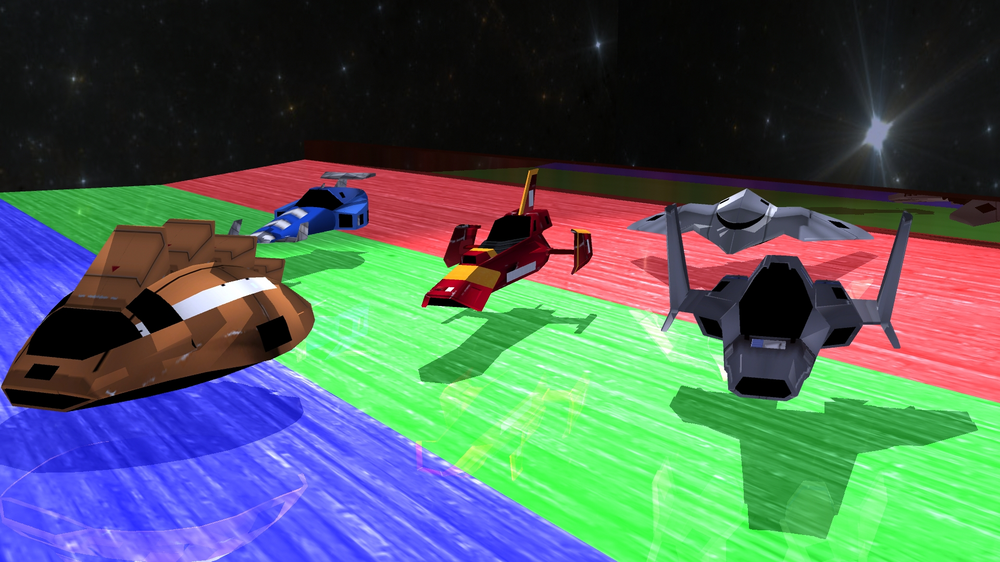

RGB Zero
immerses the user in a fast-paced racing environment where the goal is simply to go fast. Taking initial influence from games like Thumper and F-Zero, RGB Zero shows off its seamless gameplay integration with the beats of seven different songs. During the duration of the song, obstacles of three different colors (Red, Green, and Blue) will spawn on the track. Moving the ship to the same colored track as the obstacle will slightly increase the ship's speed. Users are also presented with five different F-Zero models, each with their own unique stats and boosting abilities adding further replay value. If that's not enticing enough, we've also included a global high score for you to practice songs you want to master.






Thomas Steinke
Info and contributions here
Cary Dobeck
Cary is a 4th year Computer Engineering major.
He worked on the radial blur system, implemented the cook-torrance shading model, and developed the combo boost streak game mechanic.
David Ellison
David is a 3rd year Computer Science major.
He worked on designs for the obstacle collision system and helped integrate our music system with it, in addition to the ship select and song select screens.
Jonathan Pae
Jonathan is a 4th year Software Engineering Major.
He worked on approximate view frustum culling, billboarded particle systems using transform feedback buffers, and in-game pausing mechanic.
Max Linsenbard
Max is a 4th (going on 5th) year Computer Science major and Muisc Minor.
He worked on shadow mapping, object spawning and beat synchinng, the sky renderer, and an ASCII file based level system. He also created all non-ship models, music, and SFX.
Ryan Flatland
Ryan Flatland is a 5th year Mechanical Engineering major and Computer Science minor.
He worked with building the track and making its curves flow in concert with the difficulty of the music and obstacles.
A .zip of a Mac build of the game is available
by clicking here.. As of now, an external Windows build does not exist, but can be compiled and run from our code.